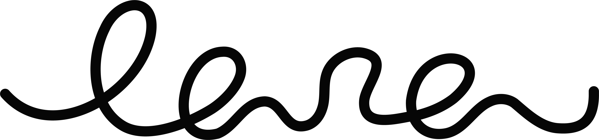

COSE
*
CONTATTI
Ciao, sono
e faccio cose
*
Il mio
.
di vista
Il mondo è più bello se c'è ordine.
Sii
bold
ma in an
italic
way.
Non seguo il flusso ma gli obiettivi.
Fatto? Se ne creano di nuovi.
Attualmente in fissa con
